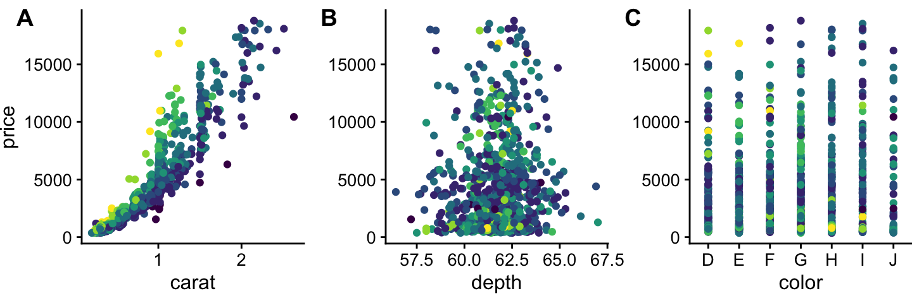
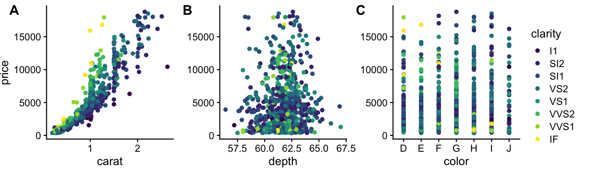
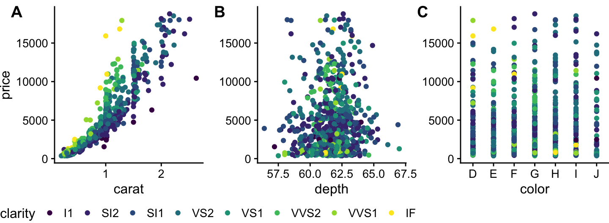
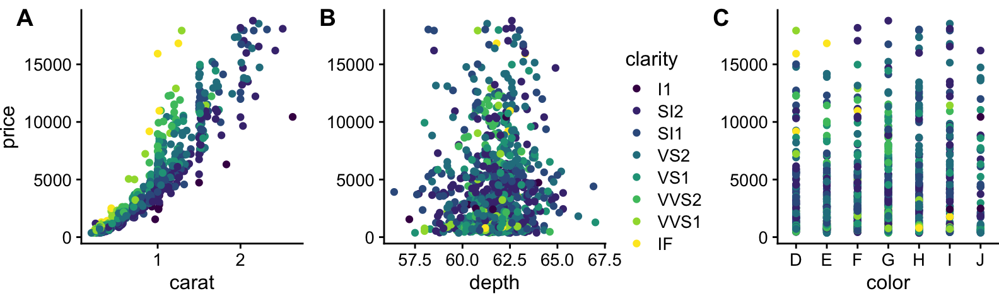
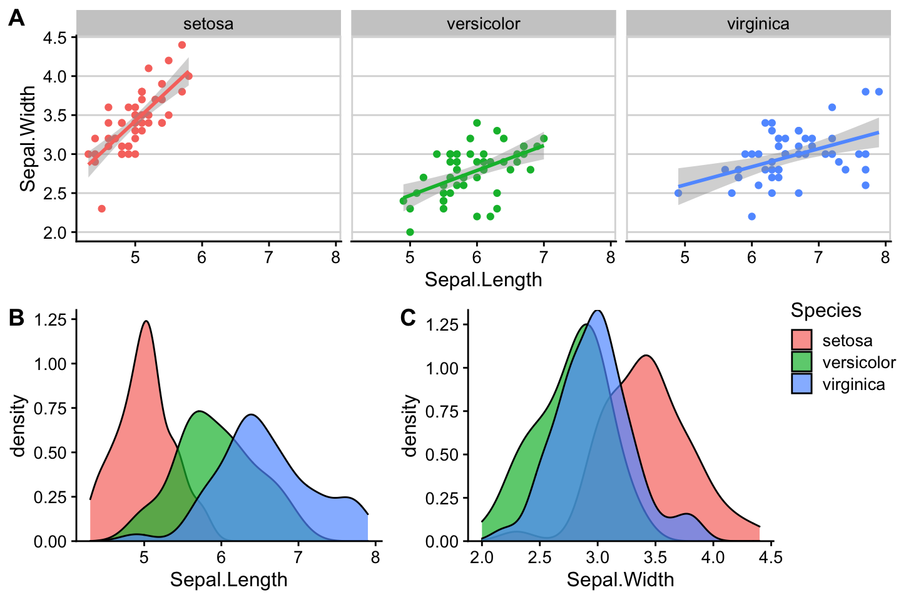

Last updated: 2021-08-24
Checks: 7 0
Knit directory: cowplot/
This reproducible R Markdown analysis was created with workflowr (version 1.6.2). The Checks tab describes the reproducibility checks that were applied when the results were created. The Past versions tab lists the development history.
Great! Since the R Markdown file has been committed to the Git repository, you know the exact version of the code that produced these results.
Great job! The global environment was empty. Objects defined in the global environment can affect the analysis in your R Markdown file in unknown ways. For reproduciblity it’s best to always run the code in an empty environment.
The command set.seed(20210824) was run prior to running the code in the R Markdown file. Setting a seed ensures that any results that rely on randomness, e.g. subsampling or permutations, are reproducible.
Great job! Recording the operating system, R version, and package versions is critical for reproducibility.
Nice! There were no cached chunks for this analysis, so you can be confident that you successfully produced the results during this run.
Great job! Using relative paths to the files within your workflowr project makes it easier to run your code on other machines.
Great! You are using Git for version control. Tracking code development and connecting the code version to the results is critical for reproducibility.
The results in this page were generated with repository version ec15818. See the Past versions tab to see a history of the changes made to the R Markdown and HTML files.
Note that you need to be careful to ensure that all relevant files for the analysis have been committed to Git prior to generating the results (you can use wflow_publish or wflow_git_commit). workflowr only checks the R Markdown file, but you know if there are other scripts or data files that it depends on. Below is the status of the Git repository when the results were generated:
Ignored files:
Ignored: .DS_Store
Note that any generated files, e.g. HTML, png, CSS, etc., are not included in this status report because it is ok for generated content to have uncommitted changes.
These are the previous versions of the repository in which changes were made to the R Markdown (analysis/shared_legends.Rmd) and HTML (docs/shared_legends.html) files. If you’ve configured a remote Git repository (see ?wflow_git_remote), click on the hyperlinks in the table below to view the files as they were in that past version.
| File | Version | Author | Date | Message |
|---|---|---|---|---|
| Rmd | ec15818 | lily123920 | 2021-08-24 | Publish the initial files for myproject |
This vignette demonstrates how to make compound plots with a shared legend.
We begin with a row of three plots, without legend.
library(ggplot2)
library(cowplot)
library(rlang)
# down-sampled diamonds data set
dsamp <- diamonds[sample(nrow(diamonds), 1000), ]
# function to create plots
plot_diamonds <- function(xaes) {
xaes <- enquo(xaes)
ggplot(dsamp, aes(!!xaes, price, color = clarity)) +
geom_point() +
theme_half_open(12) +
# we set the left and right margins to 0 to remove
# unnecessary spacing in the final plot arrangement.
theme(plot.margin = margin(6, 0, 6, 0))
}
# make three plots
p1 <- plot_diamonds(carat)
p2 <- plot_diamonds(depth) + ylab(NULL)
p3 <- plot_diamonds(color) + ylab(NULL)
# arrange the three plots in a single row
prow <- plot_grid(
p1 + theme(legend.position="none"),
p2 + theme(legend.position="none"),
p3 + theme(legend.position="none"),
align = 'vh',
labels = c("A", "B", "C"),
hjust = -1,
nrow = 1
)
prow
Now we add the legend back in manually. We can place the legend to the side of the plots.
# extract the legend from one of the plots
legend <- get_legend(
# create some space to the left of the legend
p1 + theme(legend.box.margin = margin(0, 0, 0, 12))
)
# add the legend to the row we made earlier. Give it one-third of
# the width of one plot (via rel_widths).
plot_grid(prow, legend, rel_widths = c(3, .4))
Or we can place the legend at the bottom.
# extract a legend that is laid out horizontally
legend_b <- get_legend(
p1 +
guides(color = guide_legend(nrow = 1)) +
theme(legend.position = "bottom")
)
# add the legend underneath the row we made earlier. Give it 10%
# of the height of one plot (via rel_heights).
plot_grid(prow, legend_b, ncol = 1, rel_heights = c(1, .1))
Or we can place the legend between plots.
# arrange the three plots in a single row, leaving space between plot B and C
prow <- plot_grid(
p1 + theme(legend.position="none"),
p2 + theme(legend.position="none"),
NULL,
p3 + theme(legend.position="none"),
align = 'vh',
labels = c("A", "B", "", "C"),
hjust = -1,
nrow = 1,
rel_widths = c(1, 1, .3, 1)
)
# now add in the legend
prow + draw_grob(legend, 2/3.3, 0, .3/3.3, 1)
One more example, now with a more complex plot arrangement.
# plot 1
p1 <- ggplot(iris, aes(Sepal.Length, Sepal.Width, color = Species)) +
geom_point() +
stat_smooth(method = "lm") +
facet_grid(. ~ Species) +
theme_half_open(12) +
background_grid(major = 'y', minor = "none") +
panel_border() +
theme(legend.position = "none")
# plot 2
p2 <- ggplot(iris, aes(Sepal.Length, fill = Species)) +
geom_density(alpha = .7) +
scale_y_continuous(expand = expansion(mult = c(0, 0.05))) +
theme_half_open(12) +
theme(legend.justification = "top")
p2a <- p2 + theme(legend.position = "none")
# plot 3
p3 <- ggplot(iris, aes(Sepal.Width, fill = Species)) +
geom_density(alpha = .7) +
scale_y_continuous(expand = c(0, 0)) +
theme_half_open(12) +
theme(legend.position = "none")
# legend
legend <- get_legend(p2)
# align all plots vertically
plots <- align_plots(p1, p2a, p3, align = 'v', axis = 'l')`geom_smooth()` using formula 'y ~ x'# put together the bottom row and then everything
bottom_row <- plot_grid(
plots[[2]], plots[[3]], legend,
labels = c("B", "C"),
rel_widths = c(1, 1, .3),
nrow = 1
)
plot_grid(plots[[1]], bottom_row, labels = c("A"), ncol = 1)
sessionInfo()R version 4.1.0 (2021-05-18)
Platform: x86_64-apple-darwin17.0 (64-bit)
Running under: macOS Big Sur 10.16
Matrix products: default
BLAS: /Library/Frameworks/R.framework/Versions/4.1/Resources/lib/libRblas.dylib
LAPACK: /Library/Frameworks/R.framework/Versions/4.1/Resources/lib/libRlapack.dylib
locale:
[1] zh_CN.UTF-8/zh_CN.UTF-8/zh_CN.UTF-8/C/zh_CN.UTF-8/zh_CN.UTF-8
attached base packages:
[1] stats graphics grDevices utils datasets methods base
other attached packages:
[1] rlang_0.4.11 cowplot_1.1.1 ggplot2_3.3.5 workflowr_1.6.2
loaded via a namespace (and not attached):
[1] tidyselect_1.1.1 xfun_0.25 bslib_0.2.5.1 purrr_0.3.4
[5] splines_4.1.0 lattice_0.20-44 colorspace_2.0-2 vctrs_0.3.8
[9] generics_0.1.0 htmltools_0.5.1.1 viridisLite_0.4.0 yaml_2.2.1
[13] mgcv_1.8-36 utf8_1.2.2 jquerylib_0.1.4 later_1.3.0
[17] pillar_1.6.2 glue_1.4.2 withr_2.4.2 DBI_1.1.1
[21] lifecycle_1.0.0 stringr_1.4.0 munsell_0.5.0 gtable_0.3.0
[25] evaluate_0.14 labeling_0.4.2 knitr_1.33 httpuv_1.6.2
[29] fansi_0.5.0 highr_0.9 Rcpp_1.0.7 promises_1.2.0.1
[33] scales_1.1.1 jsonlite_1.7.2 farver_2.1.0 fs_1.5.0
[37] digest_0.6.27 stringi_1.7.3 dplyr_1.0.7 grid_4.1.0
[41] rprojroot_2.0.2 tools_4.1.0 magrittr_2.0.1 sass_0.4.0
[45] tibble_3.1.3 crayon_1.4.1 whisker_0.4 pkgconfig_2.0.3
[49] ellipsis_0.3.2 Matrix_1.3-4 assertthat_0.2.1 rmarkdown_2.10
[53] R6_2.5.1 nlme_3.1-152 git2r_0.28.0 compiler_4.1.0